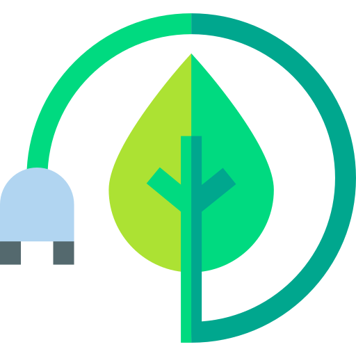

- Home
- Notre approche
-
Notre approche
Nos engagements
Habitat et patrimoine
Notre société est spécialisée dans la réhabilitation et la préservation des bâtiments anciens. Nous croyons qu'il est possible de redonner vie à des bâtiments tout en respectant leur caractère et leur histoire. Chaque projet débute par une étude approfondie de l’histoire du bâtiment : ses origines, ses usages successifs, ainsi que les matériaux et techniques employés lors de sa construction. Cette analyse est enrichie par une réflexion sur les besoins actuels de la communauté locale, grâce à des échanges avec les élus, les associations et une étude du marché. L’objectif est de préserver l’héritage et la singularité du bâtiment tout en lui redonnant une utilité contemporaine, pour qu’il continue d’enrichir la société sans peser sur les finances publiques. Pour nous, le patrimoine est un pont vivant entre les époques.

Urbanisme
L’urbanisme influence notre quotidien et nos choix de société. Chaque projet doit être pensé en lien avec son rôle dans l’aménagement urbain, en intégrant des critères de durabilité, de lien social et de qualité de vie. Créer les conditions de la proximité permet de développer une culture locale dynamique et des interactions humaines enrichissantes. Il est crucial de ne pas considérer les projets comme isolés, mais de les inscrire dans une réflexion globale pour assurer leur intégration harmonieuse dans le tissu local.

Paysage
Le paysage est le reflet d’une histoire, d’une culture et d’un art de vivre. Sa beauté ne repose pas sur la qualité individuelle de ses éléments, mais sur l’harmonie qui les lie, essentielle pour préserver l’identité du lieu et créer des espaces équilibrés. Dans nos projets, nous veillons à respecter cette cohérence en analysant l’histoire, les matériaux et l’architecture du quartier, car chaque bâtiment raconte une histoire et contribue à l’identité collective. En prenant en compte les dimensions historiques, sociales et esthétiques, nous essayons de préserver la richesse du paysage tout en créant des projets durables, renforçant ainsi le lien entre les habitants et leur environnement.

Techniques
Les projets de rénovation font face à un ensemble de contraintes parfois complexes, imposées par le bâtiment existant. Il s’agit de composer avec l’architecture et les structures en place, souvent marquées par des spécificités techniques, historiques ou réglementaires. Les techniques employées doivent s’adapter à l’existant, en trouvant des solutions qui respectent le bâti tout en intégrant des améliorations durables et efficaces. Ces contraintes exigent une adaptation minutieuse et une approche équilibrée entre préservation, innovation et durabilité.

Sobriété
En rénovation, il est essentiel de distinguer ce qui doit être modifié de ce qui peut être conservé, car, contrairement à la construction neuve, il faut composer avec l’existant, le comprendre et travailler avec lui pour éviter des interventions inutiles et des coûts superflus tout en préservant l’identité et le caractère du bâtiment.
Vision Habitat Loiret
© Copyright 2024. All Rights Reserved.